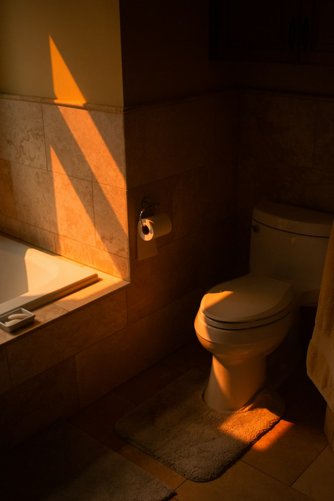

0/100
Digestive Score
Built on the Bristol Stool Form Scale — see how food, stress, and late nights shape what's happening in your gut.
A non-contact camera + sensor system that quietly reads your gut health every time you use the toilet.
Explore How it WorksCatch what wearables miss — with passive, daily monitoring of what your body leaves behind. No manual logging, no extra wearable, no lifestyle change.
Built on the Bristol Stool Form Scale — see how food, stress, and late nights shape what's happening in your gut.
Read from urine colour against a colour reference, so you know when a glass of water before lunch is due.

An 8-channel gas array and your personal baseline flag unusual patterns — like an ammonia spike — before they become routine.
Phone notifications, daily steps, sleep hours — checked every day. Yet about 70% of our immune cells live in the gut.
Projected size of the global gut health market by 2029.
Meet the criteria for at least one functional GI disorder.
Live with functional constipation.
Of users stop using health apps within 100 days — so PeekaPoo needs no logging at all.
Who it's for
Anyone who would rather notice a change early than explain it away — without logging a single thing.
Digestive and hydration self-monitoring, built into a routine you already have.
 Secondary
Secondary
Passive monitoring for peace of mind — for the person and the people who look after them.
Better long-term data for remote care, without asking patients to keep a diary.
Bathroom habits provide regular health signals — every single day.
No manual logging, no extra wearable, no lifestyle change.
Questions we hear
“Nothing big deal, right? I just need some rest.”
“Observing my stool? That sounds a little weird…”
“But I'm not a doctor — I don't know what to look for.”
“Okay… but what do all these results mean?”
“Wait… no one else can see these photos, right?”
“How can I check my gut health in real time?”
“So… who would need this?”
PeekaPoo is a wellness screening and triage aid. It helps you notice changes early and decide when to talk to a professional — it does not diagnose disease. Red flags are routed to a clinician, and every decision rule is transparent.
The team
Three students from Universiti Sains Malaysia (USM), building PeekaPoo for the Huawei ICT Competition 2026–2027 Innovation Track — because gut health deserves the same attention as our steps and sleep.